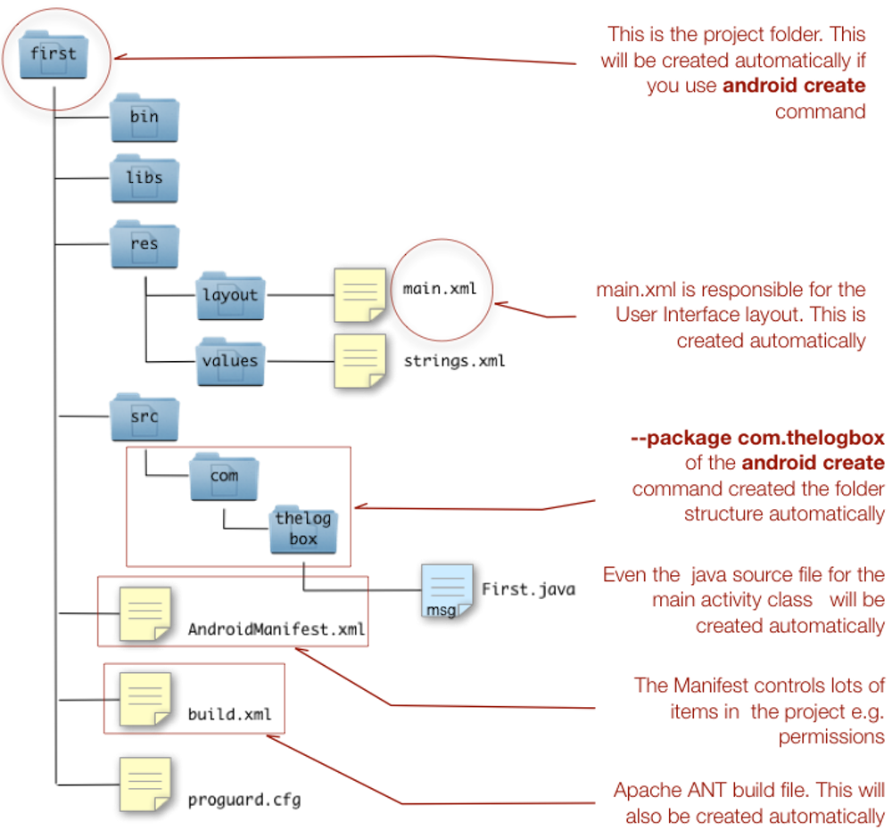

Getting Started
Table of Contents
An Android project is made up of lots of files. Even the humble Hello World app, which is what we will do, requires more than just a single Java source file. An Android app needs a couple of XML files to facilitate user interfaces and overall configuration. Obviously it will need at least one Java program file and it could contain a couple of other resource files e.g. images etc.
While you can create and assemble an Android application without the aid of a tool, it can be difficult and cumbersome, not to mention, quite impractical. The Android SDK contains tools that helps to create, build and test projects.
At this point, you must already have a properly configured development environment. If you haven't setup your environment, you can refer to Android Environment Setup before going any further.
1 Creating a project
We need to create a folder or directory where we can put all our project files. We will give that folder a name that is descriptive of the project. You can put this folder anywhere you like but there are some locations in your hard drive that might not be suited for a project like ours. Normally these places are folders where you don't have read, write and execute privileges (rwx). You have rwx capabilities on your home folder, so we wil put our project in there. The location of your home folder varies depending on what OS you use.
| Windows 7 or 8 | C:\Users\YourName |
| Linux | /home/YourName/ or simply ~/ |
| OSX | /Users/YourName or simply ~/ |
android create project --target 16 --path hello --activity HelloWorld --package com.tedhagos
- –target 16
- –path hello
- –activity HelloWorld
- –package
What will you have

2 Compiling
ant debug install
Why debug, what happens if I remove it.
Are there any other targets
3 How will you test
3.1 AVD
3.2 Physical device
What are the insights, have you answered the description above. Can Steph understand this